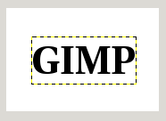
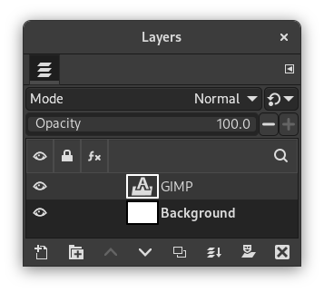
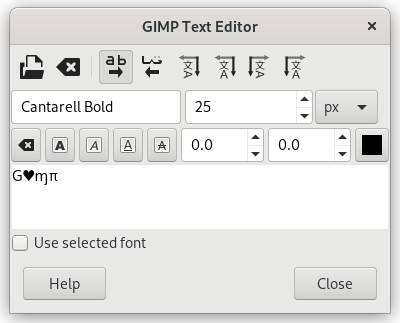
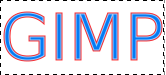
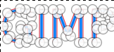

Índice
Text is managed with the Text tool. This tool creates a new layer containing the text, above the current layer in the Layers dialog, with the size of the text box. Its name is the beginning of the text.
Figura 9.1. Exemplo de um item de texto

Exemplo de um item de texto, mostrando o limite da camada de texto. (Fonte: Utopia Bold)

The Layers dialog, with the text layer above the layer which was current.
O texto pode ser editado diretamente na tela. Uma caixa de ferramenta de texto, que aparece acima da caixa de texto sobre a tela, permite que você altere rapidamente algumas características do texto.
![[Nota]](images/note.png)
|
Nota |
|---|---|
|
As configurações que você altera nesta caixa de diálogo na tela se aplicam apenas às partes do texto selecionadas, ou a qualquer novo texto que você digitar após a posição atual do cursor. |

When you click on the canvas with the Text tool, an empty text box appears with a semi-transparent dialog above it. The empty text box is where your text will appear when you start typing.
As opções da ferramenta de texto estão descritas em Seção 5.3, “Texto”.
To enter text start typing. The text box will enlarge gradually. Press Enter to add a new line.
You can also enlarge the text box by click-and-dragging, as you do with selections. While dragging, the size of the text area will be shown in the status bar at the bottom of the image window.

To edit text properties first select the part you want to change by click-and-dragging, or by using Shift+arrow keys. Then use the options of the Seção 1.3, “A caixa de ferramentas” to change the selected text.
Em vez de usar a edição de texto na tela de pintura, você pode usar o editor de texto descrito em Seção 5.3.3, “Editor de texto”.
To move the text on the image use the Move Tool. Note that by default you must click on a visible part of the text to move the text layer.
Você pode editar o texto mais tarde, se a camada de texto ainda existir e não tiver sido modificada por outra ferramenta (veja abaixo): torne a camada de texto ativa no diálogo de Camadas, selecione a ferramenta Texto e clique sobre o texto na janela de imagem.
It can be useful to enter characters that are not easily available on your keyboard. How you enter these Unicode characters depends on your Operating System.
- Linux
-
You can enter Unicode characters with the keyboard shortcut Ctrl+Shift+U followed by the hexadecimal number of the desired character and then pressing Enter.
- macOS
-
Use the Character Viewer, shortcut Ctrl+Cmd+Space to find and insert symbols, or enable the Unicode Hex Input keyboard in Keyboard settings. With the Unicode Hex Input active, hold the Option key and type the character's hexadecimal code to insert it.
- Windows
-
If you know the number of the character, you can enter that character by pressing and holding the left Alt followed by the number using the numbers on the keypad, and then releasing the Alt key. This only works for a limited set of characters.
Alternatively you can select a character or emoji by opening a dialog using the shortcut Windows-key+.. By default emojis are shown, but you can change that to symbols using the tabs at the top, and then further select a category with the tabs at the bottom.
The third option is by opening the Character Map™ application that is part of Windows and select the desired character from there.
Claro, este recurso é mais útil para inserir caracteres especiais (até mesmo exóticos), desde que os glifos necessários para esses caracteres sejam fornecidos pela fonte selecionada — poucas fontes suportam Klingon. ;-)

Unicode 0x47 (“G”), 0x2665, 0x0271, 0x03C0
Você pode operar em uma camada de texto da mesma forma que qualquer outra camada, mas isso muitas vezes significa abrir mão da capacidade de editar o texto, sem perder os resultados de seu trabalho.
Compreender algumas das idiossincrasias sobre manipulação de texto, podem ajudar a compreender que uma camada de texto contém mais informação do que os dados de pixel que você vê: ela também contém uma representação do texto em um formato de editor de texto. Você pode ver isso na janela do editor de texto que aparece enquanto você estiver usando a ferramenta Texto. Toda vez que você alterar o texto, a camada da imagem é redesenhada para refletir as alterações.
Agora suponha que você crie uma camada de texto, e em seguida opere sobre ela, de alguma forma que não envolva a ferramenta Texto: gire-a, por exemplo. Suponha que você, em seguida, volte e tente editá-lo usando a ferramenta Texto. Assim que você editar o texto, a ferramenta de texto irá redesenhar a camada, acabando com os resultados das operações que você realizou anteriormente.
Como esse perigo não é óbvio, a ferramenta de texto tenta protegê-lo dele. Se você operar em uma camada de texto, e depois tentar editar o texto, aparece uma mensagem avisando que suas alterações serão desfeitas, e lhe oferece três opções:
-
editar o texto mesmo assim;
-
cancelar;
-
criar uma nova camada de texto com o mesmo texto que a camada existente, deixando a camada existente inalterada.
An on-canvas text toolbar appears when you click on the canvas with the Text Tool, right above the location where you type your text. It allows you to change most common text settings directly on canvas. The toolbar can be moved to a different position if it is in the way.
Besides the usual text formatting features like font family, size, style and text color, you get control over baseline offset and kerning.
|
|
Nota |
|---|---|
|
Beware that all the settings on this toolbar only work on the currently selected text. That way you can use different styles for different parts of your text. |
-
The
 icon on the left side shows the area on the toolbar that you can
grab to drag the toolbar to a different location.
icon on the left side shows the area on the toolbar that you can
grab to drag the toolbar to a different location.
-
When the toolbar has been moved from its original location, it can be restored to that location by using the icon on the top right side of the toolbar. This icon is only visible if the toolbar has been moved.
-
Alterar fonte do texto selecionado: assim que você começar a editar o nome da fonte padrão, uma lista suspensa aparece, permitindo que você selecione uma fonte.
-
Change size of selected text: changes the font size of the selected text. The unit drop-down next to it can be used to change the type of unit used for the text size.
-
Clear style of selected text: use this to remove all text styling that was applied to the selected text.
-
Bold, Italic, Underline, Strikethrough: toggles the markup for the selected text.
While editing, shortcut keys can be used for Bold (Ctrl+B), Italic (Ctrl+I) and Underline Ctrl+U.
-
Change baseline of selected text: “In European typography and penmanship, baseline is the line upon which most letters "sit" and below which descenders extend” (Wikipedia). In HTML, there are several kinds of baselines (alphabetic, ideographic, bottom…). Here, consider that baseline is "bottom" and determines the place for descenders. The default baseline "0" gives place for descenders. You can use it to increase space between two lines only, while “Adjust line spacing” in tool options increases space between all lines.
-
Change kerning of selected text: “In typography, kerning… is the process of adjusting the spacing between characters in a proportional font.” (Wikipedia). You can use this setting to adjust letter spacing of a selected part of text.
Vamos olhar para um texto selecionado (zoomx800 para ver pixels):
Podemos ver que a fonte Sans é uma fonte proporcional: as larguras das letras são diferentes, e o glifo “T” vem sobre o “e”. As larguras das letras são marcadas com linhas verticais finas e as bordas esquerdas da largura das letras cobrem as letras anteriores por um pixel. Agora definimos “Alterar espaçamento entre caracteres do texto selecionado” para 2 pixels:
Blank spaces, 2 pixels wide, are added between all selected characters and letter widths are preserved. If no text is selected, a blank space is added at the location of the cursor between two characters.
Aqui está uma comparação com a opção Ajustar espaçamento entre letras da Ferramenta de Texto:
A opção se aplica a todo o texto, não apenas ao texto selecionado. Espaços em branco são adicionados dentro das larguras das letras e as larguras das letras não são respeitadas.
-
Use Ctrl+F para abrir o campo de pesquisa na lista. Um item deve ser selecionado para este comando ser eficaz.
-
Alterar cor do texto selecionado: este comando abre uma caixa de diálogo de cores onde você escolhe uma cor para o texto selecionado.


The context menu can be brought up by right-clicking on text. It is somewhat different from that of the Text Editor dialog.
The context menu offers the following options:
-
Cut, Copy, Paste, Delete: these commands work with selected text. Except for Paste, they are disabled as long as no text is selected. Paste is enabled when the clipboard contains text.
-
Paste unformatted text: paste text from the clipboard without any markup.
-
Restore On-Canvas Editor Position: changes the position of the On-Canvas Editor to its original location. This is disabled when it already is in the original location.
-
Open text file…: this command opens a file dialog where you can select a text file. The contents of this file will be opened in the current text layer.
-
Limpar: este comando exclui todo o texto, selecionado ou não.
-
Text to Path: this command creates a path from the outlines of the current text. The result is not evident. You have to open the Paths dialog and make path visible. Then select the Path tool and click on the text. Every letter is now surrounded with a path component. So you can modify the shape of letters by moving path control points.
Este comando é similar ao → .
Figura 9.9. Caminho tornado visível

Caminho tornado visível na guia Caminhos. O caminho aparece como uma borda vermelha ao redor do texto.
Figura 9.10. Ferramenta Caminhos ativada

Ferramenta Caminhos ativada; clique no caminho.
-
This option is enabled only if a path exists. When your text is created, then create or import a path and make it active. If you create your path before the text, the path becomes invisible and you have to make it visible in the Paths dialog.
The Text along path command is also available from the menu in the main menu.
The commands , , and only appear in the menu when a text layer is selected.
Select the option. The text is wrapped along the path. Letters are represented with their outline. Each of them is a component of the new path that appears in the Paths dialog.
Nota You can change the direction that the text is wrapped around the path by reversing the stroke direction when editing the path with the Path Tool. In the same way you can change at which anchor stroking starts.
Ao converter um item de texto em uma seleção ou um caminho, você pode preenchê-lo, contornar os contornos, transformá-lo ou, geralmente, aplicar toda a gama de ferramentas do GIMP para obter efeitos interessantes.
-
From left to right, From right to left, Vertical, right to left (mixed orientation), Vertical, right to left (upright orientation), Vertical, left to right (mixed orientation), Vertical, left to right (upright orientation): These commands let you adjust the writing direction of the text.